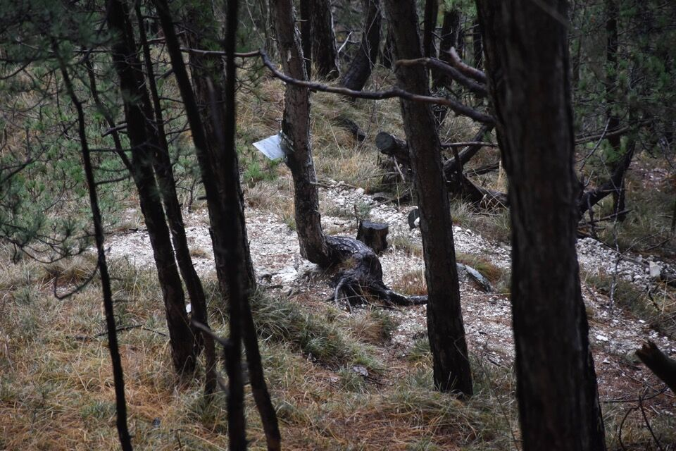
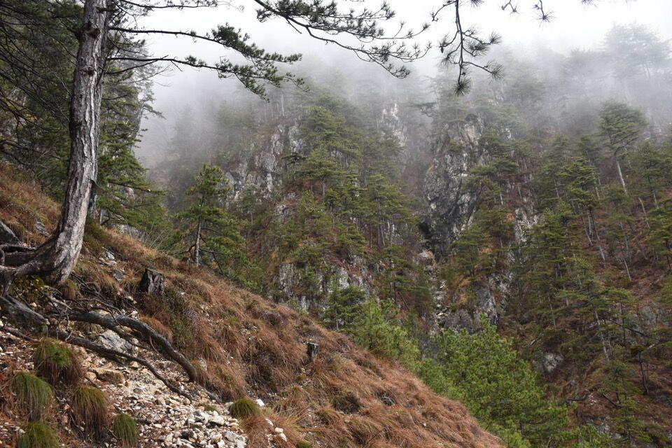
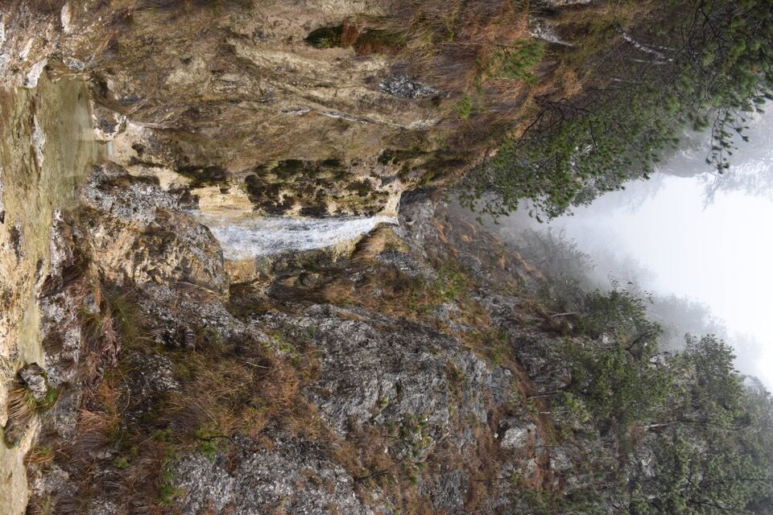
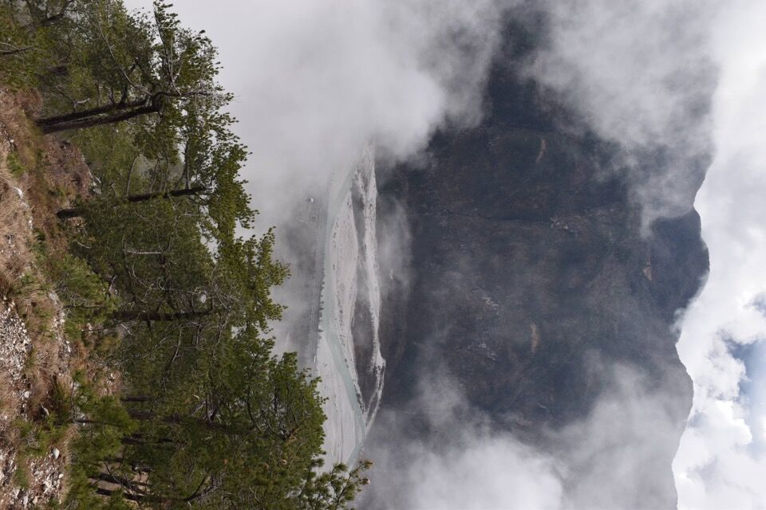
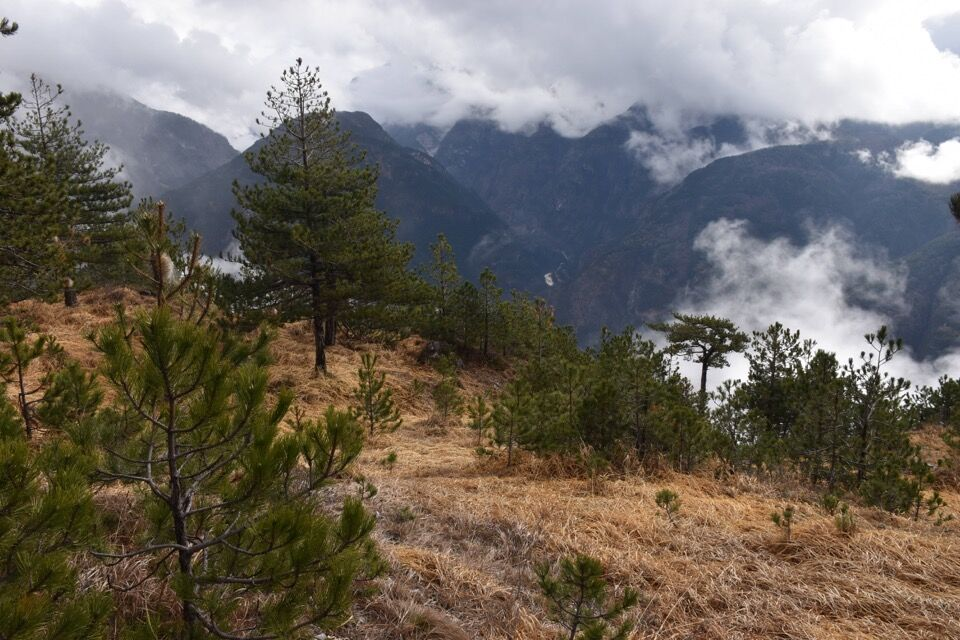
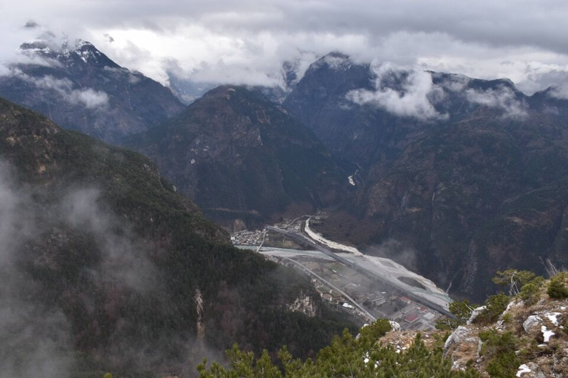
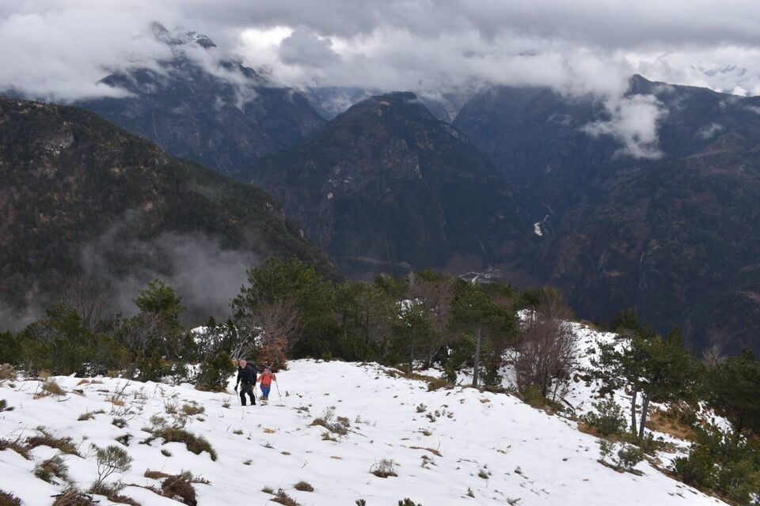
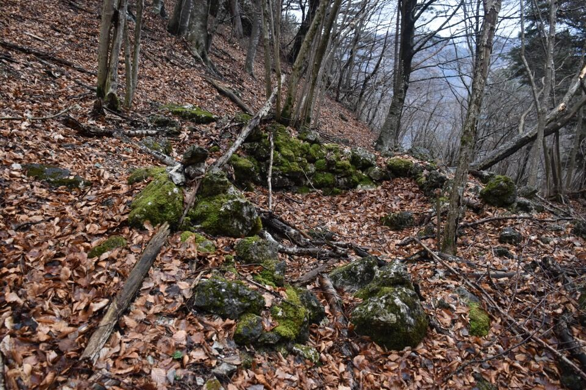
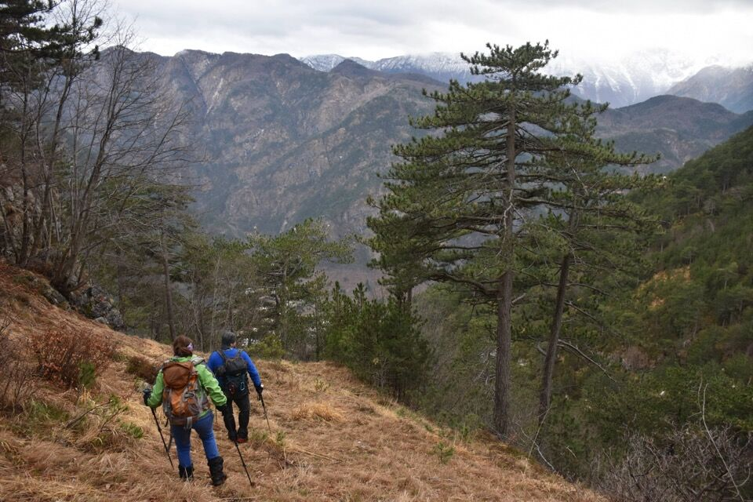
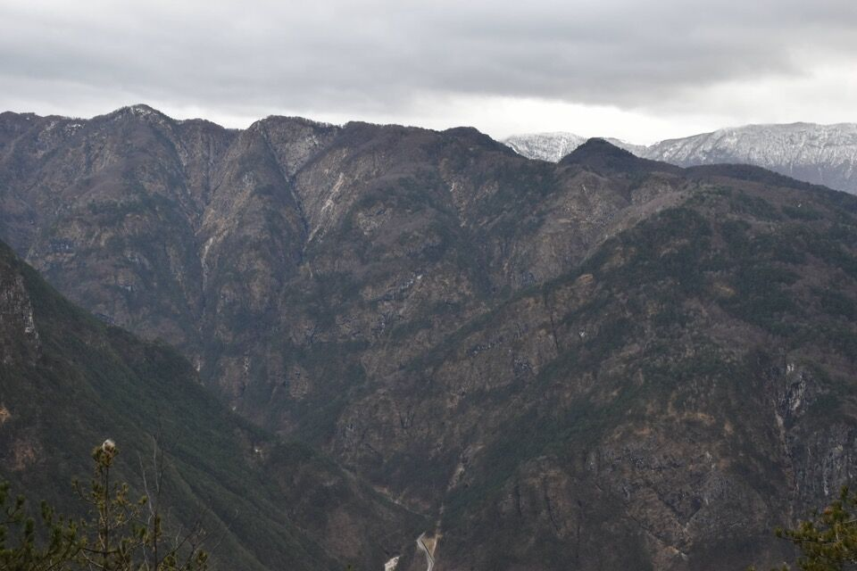

In passato avevo letto troppo velocemente il prezioso libretto del Paolini sui trois di Sclûse - ma dopo la gita sul Jouf e Ombrenum l'ho ripreso, leggendolo e studiandolo pressoché tutto in una sera preso dall'entusiasmo. In particolare mi aveva colpito la descrizione della Scjalùte Sante, neppure segnata sulle mappe: tanto mi affascinava che di colpo ho desiderato andarci, e così al fine settimana con Ivan e Luciana siamo andati a vedere.
Quel giorno però le cose sono andate diversamente: imboccata la Scjalùte Sante, per uno strano insieme di circostanze abbiamo deviato, risalendo la Pale dal Muart sotto una fitta nevicata, sbucando sulla cresta fra Belepéit e Nauràzis. Alla fine ne è uscita una interessentissima salita che neppure immaginavamo alla partenza, però restava il cruccio di non aver terminato la Scjalùte Sante, così il fine settimana dopo siamo tornati lì per completare l'opera. Già che c'eravamo, abbiamo approfittato anche per esplorare alcune varianti che avevo in mente.
Riguardo al monte Nauràzis, è interessante leggere ciò che dice a riguardo il manuale di toponomastica di Chiusaforte: si suggerisce di spiegare l'oronimo come un composto toponimico slavo con particella locativa na- (cioè su) + appellativo vratce (cioè porticella, inteso come passo montano - friulanizzato in uràtzis). Ciò suggerisce che la sella/crinale fra Belepéit e Plananize, da cui il monte (si fa per dire, dato che è un cocuzzolo di prominenza ridicola) ha preso il nome, venisse inteso come valico, come in effetti è, fra il vallone del rio di Cuestis ad ovest, con il vallone di Zeresarie ad est.
Partiamo da Vilegnove, e convinti che il sentiero che sale alla Raunis - Pulize si stacchi più ad ovest, iniziamo a ravanare già dai primi metri. In compenso raggiungiamo un rudere dove ritroviamo il troi.
Devo ammettere che per ingordigia volevo arrivare alla Scjalùte Sante, o meglio alla radura da dove si lascia il sentiero del Cretòn, in modo assai alternativo, ma con il bagnato l'attacco di questa alternativa si è rivelato poco simpatico, per cui abbiamo girato i tacchi e, ridisceso il riu dal Cuel Badìn, siamo tornati verso Raunis.
Però però... volevo comunque salire sotto quell'enorme antro che si vede da Chiusaforte, sul costone sud-est che scende direttamente dalla cima del Belepéit (q688 della Tabacco). Abbiamo trovato un bel sentiero di cacciatori, tutto tagliato, che parte dalla Raunis - Pulize appena oltrepassato il rio da le Bolp, sale alla q688 e attraversa il rio Belepéit congiungendosi alla traccia monca della Tabacco.
È facile da seguire e merita! In foto l'antro di cui parlavo, che però appare più bello se visto da lontano.
Alcuni secjons e delle saline di cacciatori ci confermano che siamo sulla retta via, qui in dx orografica del rio Belepéit.
 Il rio Belepéit, che viene attraversato più in alto dalla Sèmide dal Cretòn e più in alto ancora dal fantomatico collegamento da camosci fra la pale dal Muart e la via delle cenge "a zeta".
Arriviamo alla citata radura, quadrivio di sentieri ahimè confusionario (tutte e quattro le tracce - questa da cui siamo arrivati, quella del Cretòn, la Scjalùte Sante e quella che torna alla Raunis-Pulize - spariscono in prossimità di questa radura).
Per andare a prendere l'attacco della Scjalute Sante non c'è traccia (ce ne sono varie promettenti che poi spariscono), ma non è difficile: anzi, ci siamo proprio divertiti a cercarla! Arrivati alla prima scjalute diventa tutto evidente.
Si superano le varie fascie rocciose sfruttando i punti deboli del costone.
Arriviamo al pianoro dove la volta precedente avevamo deviato verso la Pale dal Muart, e poco sopra ci viene qualche dubbio, dato che sia verso sinistra che verso destra partono tracce evidentissime!
Pur convincendomi che la Scjalùte vada verso sinistra, percorriamo la traccia di destra perché troppo bella, su un cengione boscoso con diversi clapusç.
Proseguiamo sul cengione, confortati da vari rami piegati, fino a congiungerci alla traccia nera (non pervenuta) del Plan da la Vacje indicata sulla Tabacco, poco più sopra di dove la mappa posiziona un rudere. Comunque torniamo indietro (se no siamo punto a capo con 'sta Scjalùte Sante!)
Variante interessante: da ste parti si passa un po' dappertutto.
Dicevo, torniamo indietro e prendiamo la traccia verso sinistra, che ci porta al punto chiave della Scjalute Sante: un canalino bello ripido (ma niente a che vedere con quello della settimana prima - sotto una fitta nevicata!)
Eccoci al Plan dal Scuch.
 Pian piano il tempo migliora e si materializza la Forcje di Patoc con lo Jouf di Sclûse.
Con dispiacere devo dire che l'ultima parte della Scjalùte Sante è poco chiara, o meglio non è obbligata e quindi il percorso originario non si è conservato.
Con un cengione parallelo e appena più alto di quello di cui parlavo prima ci portiamo fino alla traccia del Plan de la Vacje e qui iniziamo a salire verso il Nauràzis; io seguo una traccia di animali che ben concorda con quella indicata sulla Tabacco che porterebbe fino a forc. Nauràzis (ma senza alcun segno umano - pure il Paolini ha qualche dubbio che passasse mai di lì quella traccia - ora invasa da enormi mugaie), ma mi faccio convincere dagli altri a puntare dritti verso la cresta. Un canale un po' impegnativo ci porta sui pendii sommitali.
Dalla q1306 (ben più meritevole della cima del Nauràzis) verso il fondovalle.
 Fra le varie opzioni di discesa che avevamo in mente, optiamo per scendere intanto alla forcje di Patoc - che qua il tempo è poco collaborativo.
Con tempo da lupi andiamo alla ricerca della traccia di collegamento Patoc - Zè (a cui vi rimando perché mi pare giusto tenerla separata) - trovarla e percorrerla, dopo averla intuita sulla base di alcuni indizi, è stata per me una grande soddisfazione.
Qui in foto appena oltre il riu da le Cjamoce sul versante nord dello Jouf di Sclûse, verso Cuestemulìn e Dogna.
Alcuni dei poveri resti del Zè, sotto al Cuel di Clâri.
Scendiamo pel Paternostri a Raunis.
Da Raunis verso i costoni che dalla val Raccolana permettono di salire al Pusti Gost resiano.
